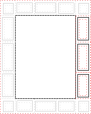

A list of issues with the current CSS page model, and possibly directions to explore for fixing it.
CSS is a language for describing the rendering of structured documents
(such as HTML and XML)
on screen, on paper, etc.
Status of this document
This section describes the status of this document at the time of its publication.
A list of current W3C publications
and the latest revision of this technical report
can be found in the W3C technical reports index at https://www.w3.org/TR/.
Please send feedback
by filing issues in GitHub (preferred),
including the spec code “css-page” in the title, like this:
“[css-page] …summary of comment…”.
All issues and comments are archived.
Alternately, feedback can be sent to the (archived) public mailing list www-style@w3.org.
This document was produced by a group operating under the W3C Patent Policy.
W3C maintains a public list of any patent disclosures made in connection with the deliverables of the group;
that page also includes instructions for disclosing a patent.
An individual who has actual knowledge of a patent which the individual believes
contains Essential Claim(s) must disclose the information in accordance with section 6 of the W3C Patent Policy.
1. The CSS 3 Page Model
This section is informative.
The current Page Model,
as described in CSS3 Module: Paged Media [CSS3PAGE],
is the following one:
the printable area of a page,
the page box,
is made of one page box itself divided in four areas:
The CSS3 Page Model
the page margin;
that area is itself divided into 16 page-margin boxes (@top-left-corner, @top-left, @top-center, etc. )

The 16 page-margin boxes (with highlight of 3 of them)
the page border
the page padding
and finally the page area containing the boxes generated by
the flow of the main contents of the document.
It’s is possible to flow content,
for instance page headers and footers or footnotes,
into a page-margin box
using features introduced by the CSS Generated Content for Paged Media Module [CSS3GCPM].
It is also possible to define multiple page templates for a single document
using the @page at-rule
that allows to select the
first page, left pages, right pages or named pages of a paginated flow.
If this page model allowed the publishing industry to adopt HTML and CSS as pivot formats,
it starts showing its limits for the following reasons:
the 16 page-margin boxes are an extension
of the print features offered by desktop browsers.
Desktop browsers usually offer control over 6 page-margin boxes only.
Only one desktop browser claims implementation
of the page model described above in the fourteen last years.
The other desktop browsers' control over the 6 page-margin boxes
is then not achieved through the cascade of CSS UA stylesheets.
no editing environment available on the market
and in particular Wysiwyg text editor
(for instance like Microsoft Word)
implements such a box model.
it’s not possible with the current model to position headers and footers
(for instance the HTML5 header and footer elements)
arbitrarily in the page area.
the @page at-rule currently allows nested at-rules
only for the definition of page-margin boxes.
Similarly, the set of CSS properties applicable to a page box
is limited and it is impossible in this model to use CSS Regions Module Level 3 [CSS3-REGIONS] to flow content into a given predefined area of a page,
exclude an area from the page using CSS 3 Exclusions and Shapes Module [CSS3-EXCLUSIONS],
lay out the page area into a grid using CSS Grid Layout [CSS3-GRID-LAYOUT] or using ''@slot rules
that were discussed multiple times by the CSS Working Group
in the recent past.
The successful electronic book editing environment of Apple Inc.,
iBooks Author,
already allows @page rules to specify
arbitrary slots,
arbitrary exclusions and shapes,
and extends the list of applicable properties;
most of its advanced layout capabilities are based on these features.
the @page rule of CSS 2.1 [CSS21] is intended for use on print media,
not dynamic media.
The spread of complex HTML-based slideshows and electronic book viewers
has shown that the Page Model should also apply to screen media and alike.
++TBD
Conformance
Document conventions
Conformance requirements are expressed with a combination of
descriptive assertions and RFC 2119 terminology. The key words “MUST”,
“MUST NOT”, “REQUIRED”, “SHALL”, “SHALL NOT”, “SHOULD”, “SHOULD NOT”,
“RECOMMENDED”, “MAY”, and “OPTIONAL” in the normative parts of this
document are to be interpreted as described in RFC 2119.
However, for readability, these words do not appear in all uppercase
letters in this specification.
All of the text of this specification is normative except sections
explicitly marked as non-normative, examples, and notes. [RFC2119]
Examples in this specification are introduced with the words “for example”
or are set apart from the normative text with class="example",
like this:
This is an example of an informative example.
Informative notes begin with the word “Note” and are set apart from the
normative text with class="note", like this:
Note, this is an informative note.
Advisements are normative sections styled to evoke special attention and are
set apart from other normative text with <strong class="advisement">, like
this: UAs MUST provide an accessible alternative.
Conformance classes
Conformance to this specification
is defined for three conformance classes:
A style sheet is conformant to this specification
if all of its statements that use syntax defined in this module are valid
according to the generic CSS grammar and the individual grammars of each
feature defined in this module.
A renderer is conformant to this specification
if, in addition to interpreting the style sheet as defined by the
appropriate specifications, it supports all the features defined
by this specification by parsing them correctly
and rendering the document accordingly. However, the inability of a
UA to correctly render a document due to limitations of the device
does not make the UA non-conformant. (For example, a UA is not
required to render color on a monochrome monitor.)
An authoring tool is conformant to this specification
if it writes style sheets that are syntactically correct according to the
generic CSS grammar and the individual grammars of each feature in
this module, and meet all other conformance requirements of style sheets
as described in this module.
Partial implementations
So that authors can exploit the forward-compatible parsing rules to
assign fallback values, CSS renderers must treat as invalid (and ignore
as appropriate) any at-rules, properties, property values, keywords,
and other syntactic constructs for which they have no usable level of
support. In particular, user agents must not selectively
ignore unsupported component values and honor supported values in a single
multi-value property declaration: if any value is considered invalid
(as unsupported values must be), CSS requires that the entire declaration
be ignored.
Implementations of Unstable and Proprietary Features
Once a specification reaches the Candidate Recommendation stage,
non-experimental implementations are possible, and implementors should
release an unprefixed implementation of any CR-level feature they
can demonstrate to be correctly implemented according to spec.
To establish and maintain the interoperability of CSS across
implementations, the CSS Working Group requests that non-experimental
CSS renderers submit an implementation report (and, if necessary, the
testcases used for that implementation report) to the W3C before
releasing an unprefixed implementation of any CSS features. Testcases
submitted to W3C are subject to review and correction by the CSS
Working Group.